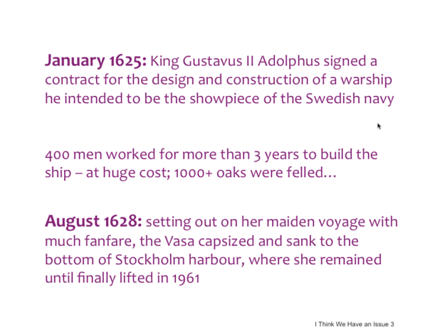
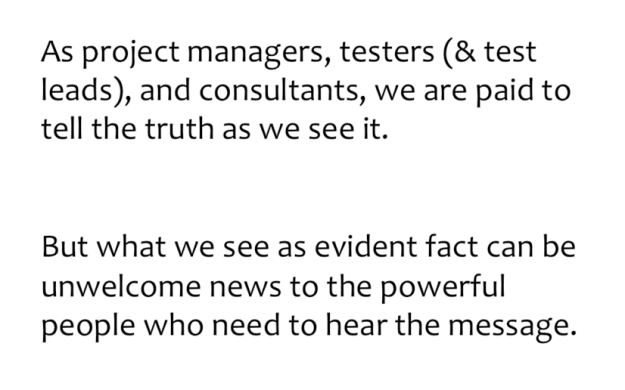

EuroStar Webinar: Delivering Unwelcome Messages
A big part of my job as Quality Assurance Manager is delivering bad news. The EuroStar webinar “I think we have an issue — Delivering Unwelcome Messages” hosted by Fiona Charles on Tuesday reinforced the communication conventions we should practice when delivering the bad news but don’t consciously consider all the time. We have to (1) deliver the bad news (2) to the right person/people (3) at the right time (4) with facts rather than emotion.
1. Deliver the bad news.
Fiona began with a counterexample of what happens when the first step — actually delivering the bad news — is ignored.
My favorite slide
When the king of Sweden was building a fancy ship and nobody dared to tell him that the basic safety test failed (the top-heavy design wouldn’t allow for people to run back and forth without tipping), the ship was launched anyway and sank almost immediately.
2. Deliver the bad news at the right time.
The right time to deliver bad news is at a meeting with your bad news on the agenda. If it’s really bad news, make it the only thing on the agenda. And schedule the meeting sooner rather than later. Make sure the recipients of the bad news can hear you. Get a conference room, or at least cut the multi-tasking.
People don’t like hearing bad news.
3. Deliver the bad news to the right person.
Next, deliver the bad news to the decision makers. As the software tester, you are not the only decision maker. If you don’t interact with the decision makers, speak to someone who can. Confirm the workflow before problems arise so you know who to call when the time comes. If the bad news is big, bring an ally to your meeting. Consider whether the recipient of the bad news will believe you. A person who you don’t interact with everyday or haven’t met in person would prefer to ignore your bad news than deal with it.
4. Deliver facts, not emotions.
Present the recipient of the bad news with facts so they believe you. Stick to those facts rather than giving your opinion. If you do give your opinion, make it clear that it’s separate from the facts. If you need to gather more facts, give them a “let me get back to you on that.” Explain the problem without assigning blame to anyone. Other people have feelings. Do not embarrass them or they won’t want to listen when you have more bad news.
In summary, be sure to (1) deliver the bad news (2) to the right person/people (3) at the right time (4) with facts rather than emotion. If the recipient believes your information is valuable, you’ve done your duty.
Many thanks to Fiona Charles for hosting the webinar. Check out the EuroStarConferences website for the complete slides and video archive of the webinar.
Originally published at murphyslawtester.wordpress.com on February 17, 2014 and duplicated on Medium.